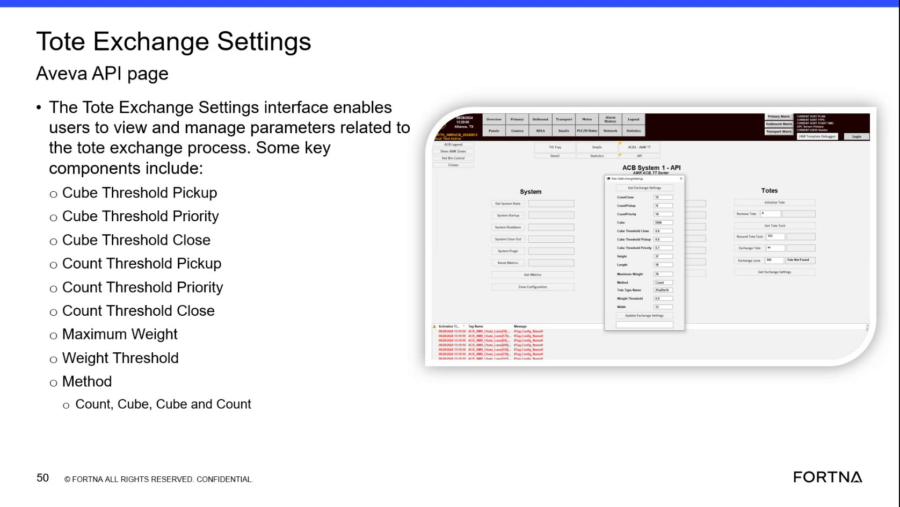

| Procedure ID | proc_identify_who_can_update_tote_exchange_settings_and_note_project_finalization_context_v1 |
|---|---|
| Title | Identify Who Can Update Tote Exchange Settings And Note Project Finalization Context |
| Procedure Type | reference |
| Primary Role | L1_support |
| Support Safe | Yes |
| Validation Status | needs_sme_review |
| Merge Status | source_finalized |
Use the training segment on Tote Exchange Settings to document the source-backed ownership context: the settings can be updated by the customer, but are generally finalized with the project team and UPS at the end of UAT. This runbook is for recording that distinction only and does not define permissions, approvals, or production change authority.
Use when documenting or answering questions about the source-stated ownership context for Tote Exchange Settings, especially when distinguishing who can update the settings versus how they are generally finalized during the project lifecycle.
Responsible role: L1_support
Instruction:
Review the Tote Exchange Settings training segment and note the statement about who can update the settings.
Expected result:
The relevant source statement is identified in the training segment.
Screens / Images:

Stop or Escalate If:
Responsible role: L1_support
Instruction:
Record that the source says these settings can be updated by the customer.
Expected result:
Documentation includes the statement that the customer can update the settings.
Screens / Images:
Stop or Escalate If:
Responsible role: L1_support
Instruction:
Record that the source also says the settings are generally finalized with the project team and UPS at the end of UAT.
Expected result:
Documentation includes the statement that the settings are generally finalized with the project team and UPS at the end of UAT.
Screens / Images:
Stop or Escalate If:
Responsible role: L1_support
Instruction:
When documenting the configuration ownership context, distinguish between update capability and finalization context exactly as stated in the source.
Expected result:
The final note clearly separates customer update capability from general end-of-UAT finalization context.
Stop or Escalate If:
Responsible role: L1_support
Instruction:
Do not assign approval rules, access permissions, or escalation paths that are not explicitly provided by the source.
Expected result:
The documentation remains limited to the source-backed ownership context.
Stop or Escalate If: